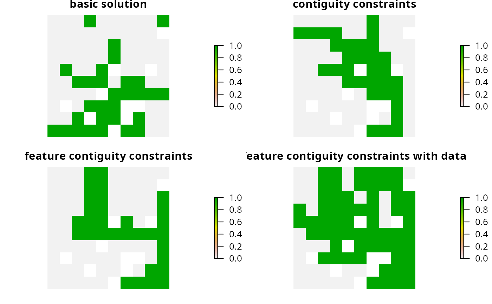
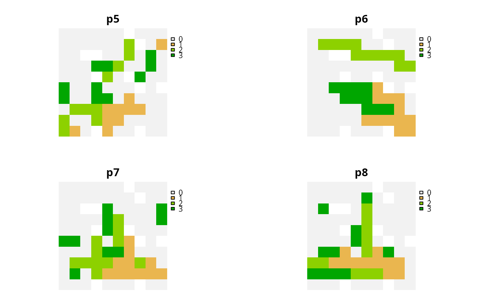

R/add_feature_contiguity_constraints.R
add_feature_contiguity_constraints.RdAdd constraints to a problem to ensure that each feature is
represented in a contiguous unit of dispersible habitat. These constraints
are a more advanced version of those implemented in the
add_contiguity_constraints function, because they ensure that
each feature is represented in a contiguous unit and not that the entire
solution should form a contiguous unit. Additionally, this function
can use data showing the distribution of dispersible habitat for each
feature to ensure that all features can disperse through out the areas
designated for their conservation.
# S4 method for ConservationProblem,ANY,Matrix add_feature_contiguity_constraints(x, zones, data) # S4 method for ConservationProblem,ANY,data.frame add_feature_contiguity_constraints(x, zones, data) # S4 method for ConservationProblem,ANY,matrix add_feature_contiguity_constraints(x, zones, data) # S4 method for ConservationProblem,ANY,ANY add_feature_contiguity_constraints(x, zones, data)
| x |
|
|---|---|
| zones |
|
| data |
|
This function uses connection data to identify solutions that
represent features in contiguous units of dispersible habitat. In earlier
versions of the prioritizr package, it was known as the
add_corridor_constraints function but has since been renamed for
clarity. It was inspired by the mathematical formulations detailed in
\"Onal and Briers (2006) and Cardeira et al. 2010. For an
example that has used these constraints, see Hanson, Fuller,
and Rhodes (2018). Please note
that these constraints require the expanded formulation and therefore
cannot be used with feature data that have negative vales.
Please note that adding these constraints to a problem will
drastically increase the amount of time required to solve it.
The argument to data can be specified in several ways:
NULLconnection data should be calculated automatically
using the connected_matrix function. This is the default
argument and means that all adjacent planning units are treated
as potentially dispersible for all features.
Note that the connection data must be manually defined
using one of the other formats below when the planning unit data
in the argument to x is not spatially referenced (e.g.
in data.frame or numeric format).
matrix, Matrixwhere rows and columns represent
different planning units and the value of each cell indicates if the
two planning units are connected or not. Cell values should be binary
numeric values (i.e. one or zero). Cells that occur along the
matrix diagonal have no effect on the solution at all because each
planning unit cannot be a connected with itself. Note that pairs
of connected planning units are treated as being potentially dispersible
for all features.
data.framecontaining the fields (columns)
"id1", "id2", and "boundary". Here, each row
denotes the connectivity between two planning units following the
Marxan format. The field boundary should contain
binary numeric values that indicate if the two planning units
specified in the fields "id1" and "id2" are connected
or not. This data can be used to describe symmetric or
asymmetric relationships between planning units. By default,
input data is assumed to be symmetric unless asymmetric data is
also included (e.g. if data is present for planning units 2 and 3, then
the same amount of connectivity is expected for planning units 3 and 2,
unless connectivity data is also provided for planning units 3 and 2).
Note that pairs of connected planning units are treated as being
potentially dispersible for all features.
listcontaining matrix, Matrix, or
data.frame objects showing which planning units
should be treated as connected for each feature. Each element in the
list should correspond to a different feature (specifically,
a different target in the problem), and should contain a matrix,
Matrix, or data.frame object that follows the conventions
detailed above.
\"Onal H and Briers RA (2006) Optimal selection of a connected reserve network. Operations Research, 54: 379--388.
Cardeira JO, Pinto LS, Cabeza M and Gaston KJ (2010) Species specific connectivity in reserve-network design using graphs. Biological Conservation, 2: 408--415.
Hanson JO, Fuller RA, & Rhodes JR (2018) Conventional methods for enhancing connectivity in conservation planning do not always maintain gene flow. Journal of Applied Ecology, In press: https://doi.org/10.1111/1365-2664.13315.
# load data data(sim_pu_raster, sim_pu_zones_stack, sim_features, sim_features_zones) # create minimal problem p1 <- problem(sim_pu_raster, sim_features) %>% add_min_set_objective() %>% add_relative_targets(0.3) # create problem with contiguity constraints p2 <- p1 %>% add_contiguity_constraints() # create problem with constraints to represent features in contiguous # units p3 <- p1 %>% add_feature_contiguity_constraints() # create problem with constraints to represent features in contiguous # units that contain highly suitable habitat values # (specifically in the top 1.5th percentile) cm4 <- lapply(seq_len(nlayers(sim_features)), function(i) { # create connectivity matrix using the i'th feature's habitat data m <- connectivity_matrix(sim_pu_raster, sim_features[[i]]) # convert matrix to TRUE/FALSE values in top 20th percentile m <- m > quantile(as.vector(m), 1 - 0.015, names = FALSE) # convert matrix from TRUE/FALSE to sparse matrix with 0/1s m <- as(m, "dgCMatrix") # remove 0s from the sparse matrix m <- Matrix::drop0(m) # return matrix m }) p4 <- p1 %>% add_feature_contiguity_constraints(data = cm4)#> Optimize a model with 5 rows, 90 columns and 450 nonzeros #> Variable types: 0 continuous, 90 integer (90 binary) #> Coefficient statistics: #> Matrix range [2e-01, 9e-01] #> Objective range [2e+02, 2e+02] #> Bounds range [1e+00, 1e+00] #> RHS range [9e+00, 2e+01] #> Found heuristic solution: objective 6571.2631720 #> Presolve time: 0.00s #> Presolved: 5 rows, 90 columns, 450 nonzeros #> Variable types: 0 continuous, 90 integer (90 binary) #> Presolved: 5 rows, 90 columns, 450 nonzeros #> #> #> Root relaxation: objective 5.894507e+03, 16 iterations, 0.00 seconds #> #> Nodes | Current Node | Objective Bounds | Work #> Expl Unexpl | Obj Depth IntInf | Incumbent BestBd Gap | It/Node Time #> #> 0 0 5894.50724 0 4 6571.26317 5894.50724 10.3% - 0s #> H 0 0 6035.8622908 5894.50724 2.34% - 0s #> #> Explored 1 nodes (16 simplex iterations) in 0.00 seconds #> Thread count was 1 (of 4 available processors) #> #> Solution count 2: 6035.86 6571.26 #> #> Optimal solution found (tolerance 1.00e-01) #> Best objective 6.035862290759e+03, best bound 5.894507235784e+03, gap 2.3419% #> Optimize a model with 236 rows, 234 columns and 1202 nonzeros #> Variable types: 0 continuous, 234 integer (234 binary) #> Coefficient statistics: #> Matrix range [2e-01, 1e+00] #> Objective range [2e+02, 2e+02] #> Bounds range [1e+00, 1e+00] #> RHS range [1e+00, 2e+01] #> Presolve removed 24 rows and 25 columns #> Presolve time: 0.01s #> Presolved: 212 rows, 209 columns, 945 nonzeros #> Variable types: 0 continuous, 209 integer (209 binary) #> Presolved: 212 rows, 209 columns, 945 nonzeros #> #> #> Root relaxation: objective 5.974619e+03, 113 iterations, 0.00 seconds #> #> Nodes | Current Node | Objective Bounds | Work #> Expl Unexpl | Obj Depth IntInf | Incumbent BestBd Gap | It/Node Time #> #> 0 0 5974.61922 0 87 - 5974.61922 - - 0s #> 0 0 5980.28056 0 92 - 5980.28056 - - 0s #> 0 0 5981.05378 0 93 - 5981.05378 - - 0s #> 0 0 5987.71284 0 93 - 5987.71284 - - 0s #> 0 0 5988.40661 0 81 - 5988.40661 - - 0s #> 0 0 5988.66628 0 101 - 5988.66628 - - 0s #> 0 0 5988.69676 0 98 - 5988.69676 - - 0s #> 0 0 5989.42897 0 100 - 5989.42897 - - 0s #> 0 0 5998.40310 0 101 - 5998.40310 - - 0s #> 0 0 5998.77347 0 99 - 5998.77347 - - 0s #> 0 0 5998.95186 0 86 - 5998.95186 - - 0s #> 0 0 6001.39549 0 100 - 6001.39549 - - 0s #> 0 0 6001.47103 0 100 - 6001.47103 - - 0s #> 0 0 6001.47103 0 100 - 6001.47103 - - 0s #> H 0 0 6549.4237024 6001.47103 8.37% - 0s #> #> Cutting planes: #> Gomory: 1 #> Clique: 1 #> MIR: 1 #> Zero half: 10 #> Mod-K: 3 #> #> Explored 1 nodes (308 simplex iterations) in 0.08 seconds #> Thread count was 1 (of 4 available processors) #> #> Solution count 1: 6549.42 #> #> Optimal solution found (tolerance 1.00e-01) #> Best objective 6.549423702358e+03, best bound 6.001471028808e+03, gap 8.3664% #> Optimize a model with 1610 rows, 1260 columns and 5110 nonzeros #> Variable types: 0 continuous, 1260 integer (1260 binary) #> Coefficient statistics: #> Matrix range [2e-01, 1e+00] #> Objective range [2e+02, 2e+02] #> Bounds range [1e+00, 1e+00] #> RHS range [1e+00, 2e+01] #> Presolve removed 194 rows and 195 columns #> Presolve time: 0.05s #> Presolved: 1416 rows, 1065 columns, 4023 nonzeros #> Variable types: 0 continuous, 1065 integer (1065 binary) #> Presolved: 1416 rows, 1065 columns, 4023 nonzeros #> #> #> Root relaxation: objective 5.974619e+03, 1232 iterations, 0.03 seconds #> #> Nodes | Current Node | Objective Bounds | Work #> Expl Unexpl | Obj Depth IntInf | Incumbent BestBd Gap | It/Node Time #> #> 0 0 5974.61922 0 489 - 5974.61922 - - 0s #> 0 0 5978.30324 0 407 - 5978.30324 - - 0s #> 0 0 5978.45612 0 508 - 5978.45612 - - 0s #> 0 0 5979.72695 0 503 - 5979.72695 - - 0s #> 0 0 5980.31974 0 547 - 5980.31974 - - 0s #> 0 0 5980.34413 0 553 - 5980.34413 - - 0s #> 0 0 5980.34687 0 554 - 5980.34687 - - 0s #> 0 0 5980.34687 0 551 - 5980.34687 - - 0s #> H 0 0 7804.3290306 5980.34687 23.4% - 0s #> 0 2 5980.36472 0 551 7804.32903 5980.36472 23.4% - 0s #> H 27 27 7007.7359682 5980.45025 14.7% 80.3 0s #> H 28 28 6379.5724215 5980.45025 6.26% 78.0 0s #> #> Cutting planes: #> Gomory: 1 #> Zero half: 11 #> #> Explored 28 nodes (4612 simplex iterations) in 0.48 seconds #> Thread count was 1 (of 4 available processors) #> #> Solution count 3: 6379.57 7007.74 7804.33 #> #> Optimal solution found (tolerance 1.00e-01) #> Best objective 6.379572421546e+03, best bound 5.980450249872e+03, gap 6.2563% #> Optimize a model with 1076 rows, 915 columns and 3541 nonzeros #> Variable types: 0 continuous, 915 integer (915 binary) #> Coefficient statistics: #> Matrix range [2e-01, 1e+00] #> Objective range [2e+02, 2e+02] #> Bounds range [1e+00, 1e+00] #> RHS range [1e+00, 2e+01] #> Presolve removed 608 rows and 529 columns #> Presolve time: 0.02s #> Presolved: 468 rows, 386 columns, 1294 nonzeros #> Variable types: 0 continuous, 386 integer (386 binary) #> Presolved: 468 rows, 386 columns, 1294 nonzeros #> #> #> Root relaxation: objective 1.168422e+04, 369 iterations, 0.00 seconds #> #> Nodes | Current Node | Objective Bounds | Work #> Expl Unexpl | Obj Depth IntInf | Incumbent BestBd Gap | It/Node Time #> #> 0 0 11684.2161 0 81 - 11684.2161 - - 0s #> H 0 0 12310.758400 11684.2161 5.09% - 0s #> #> Explored 1 nodes (447 simplex iterations) in 0.04 seconds #> Thread count was 1 (of 4 available processors) #> #> Solution count 1: 12310.8 #> #> Optimal solution found (tolerance 1.00e-01) #> Best objective 1.231075839987e+04, best bound 1.168421614208e+04, gap 5.0894%# plot solutions plot(s1, axes = FALSE, box = FALSE, main = c("basic solution", "contiguity constraints", "feature contiguity constraints", "feature contiguity constraints with data"))# create minimal problem with multiple zones, and limit the solver to # 30 seconds to obtain solutions in a feasible period of time p5 <- problem(sim_pu_zones_stack, sim_features_zones) %>% add_min_set_objective() %>% add_relative_targets(matrix(0.1, ncol = 3, nrow = 5)) %>% add_default_solver(time_limit = 30) %>% add_binary_decisions() # create problem with contiguity constraints that specify that the # planning units used to conserve each feature in different management # zones must form separate contiguous units p6 <- p5 %>% add_feature_contiguity_constraints(diag(3)) # create problem with contiguity constraints that specify that the # planning units used to conserve each feature must form a single # contiguous unit if the planning units are allocated to zones 1 and 2 # and do not need to form a single contiguous unit if they are allocated # to zone 3 zm7 <- matrix(0, ncol = 3, nrow = 3) zm7[seq_len(2), seq_len(2)] <- 1 print(zm7)#> [,1] [,2] [,3] #> [1,] 1 1 0 #> [2,] 1 1 0 #> [3,] 0 0 0p7 <- p5 %>% add_feature_contiguity_constraints(zm7) # create problem with contiguity constraints that specify that all of # the planning units in all three of the zones must conserve first feature # in a single contiguous unit but the planning units used to conserve the # remaining features do not need to be contiguous in any way zm8 <- lapply(seq_len(number_of_features(sim_features_zones)), function(i) matrix(ifelse(i == 1, 1, 0), ncol = 3, nrow = 3)) print(zm8)#> [[1]] #> [,1] [,2] [,3] #> [1,] 1 1 1 #> [2,] 1 1 1 #> [3,] 1 1 1 #> #> [[2]] #> [,1] [,2] [,3] #> [1,] 0 0 0 #> [2,] 0 0 0 #> [3,] 0 0 0 #> #> [[3]] #> [,1] [,2] [,3] #> [1,] 0 0 0 #> [2,] 0 0 0 #> [3,] 0 0 0 #> #> [[4]] #> [,1] [,2] [,3] #> [1,] 0 0 0 #> [2,] 0 0 0 #> [3,] 0 0 0 #> #> [[5]] #> [,1] [,2] [,3] #> [1,] 0 0 0 #> [2,] 0 0 0 #> [3,] 0 0 0 #>p8 <- p5 %>% add_feature_contiguity_constraints(zm8)#> Optimize a model with 105 rows, 270 columns and 1620 nonzeros #> Variable types: 0 continuous, 270 integer (270 binary) #> Coefficient statistics: #> Matrix range [2e-01, 1e+00] #> Objective range [2e+02, 2e+02] #> Bounds range [1e+00, 1e+00] #> RHS range [1e+00, 8e+00] #> Found heuristic solution: objective 7019.1222763 #> Presolve time: 0.00s #> Presolved: 105 rows, 270 columns, 1620 nonzeros #> Variable types: 0 continuous, 270 integer (270 binary) #> Presolved: 105 rows, 270 columns, 1620 nonzeros #> #> #> Root relaxation: objective 5.935429e+03, 100 iterations, 0.00 seconds #> #> Nodes | Current Node | Objective Bounds | Work #> Expl Unexpl | Obj Depth IntInf | Incumbent BestBd Gap | It/Node Time #> #> 0 0 5935.42867 0 13 7019.12228 5935.42867 15.4% - 0s #> H 0 0 6082.2792264 5935.42867 2.41% - 0s #> #> Explored 1 nodes (100 simplex iterations) in 0.01 seconds #> Thread count was 1 (of 4 available processors) #> #> Solution count 2: 6082.28 7019.12 #> #> Optimal solution found (tolerance 1.00e-01) #> Best objective 6.082279226435e+03, best bound 5.935428674960e+03, gap 2.4144% #> Optimize a model with 4935 rows, 3795 columns and 15660 nonzeros #> Variable types: 0 continuous, 3795 integer (3795 binary) #> Coefficient statistics: #> Matrix range [2e-01, 1e+00] #> Objective range [2e+02, 2e+02] #> Bounds range [1e+00, 1e+00] #> RHS range [1e+00, 8e+00] #> Presolve removed 369 rows and 369 columns #> Presolve time: 0.59s #> Presolved: 4566 rows, 3426 columns, 14223 nonzeros #> Variable types: 0 continuous, 3426 integer (3426 binary) #> Presolved: 4566 rows, 3426 columns, 14223 nonzeros #> #> #> Root relaxation: objective 5.964223e+03, 5545 iterations, 0.32 seconds #> #> Nodes | Current Node | Objective Bounds | Work #> Expl Unexpl | Obj Depth IntInf | Incumbent BestBd Gap | It/Node Time #> #> 0 0 5964.22270 0 817 - 5964.22270 - - 1s #> 0 0 5973.19018 0 890 - 5973.19018 - - 1s #> 0 0 5974.24060 0 951 - 5974.24060 - - 1s #> 0 0 5974.59812 0 979 - 5974.59812 - - 1s #> 0 0 5981.69061 0 939 - 5981.69061 - - 1s #> 0 0 5981.81929 0 906 - 5981.81929 - - 1s #> 0 0 5982.14288 0 956 - 5982.14288 - - 1s #> 0 0 5985.60715 0 1016 - 5985.60715 - - 2s #> 0 0 5986.15050 0 1083 - 5986.15050 - - 2s #> 0 0 5986.18663 0 1090 - 5986.18663 - - 2s #> 0 0 5986.18663 0 1090 - 5986.18663 - - 2s #> 0 0 5989.16270 0 1089 - 5989.16270 - - 2s #> 0 0 5989.26277 0 1054 - 5989.26277 - - 2s #> 0 0 5989.26277 0 1055 - 5989.26277 - - 2s #> 0 0 5989.85690 0 1080 - 5989.85690 - - 2s #> 0 0 5990.72442 0 1067 - 5990.72442 - - 2s #> 0 0 5990.89259 0 1113 - 5990.89259 - - 2s #> 0 0 5990.90595 0 1137 - 5990.90595 - - 2s #> 0 0 5991.12807 0 1053 - 5991.12807 - - 2s #> 0 0 5991.18138 0 1088 - 5991.18138 - - 2s #> 0 0 5991.18284 0 1112 - 5991.18284 - - 2s #> 0 0 5991.61520 0 1190 - 5991.61520 - - 2s #> 0 0 5991.96959 0 1121 - 5991.96959 - - 2s #> 0 0 5992.11345 0 1075 - 5992.11345 - - 2s #> 0 0 5993.37984 0 1050 - 5993.37984 - - 2s #> 0 0 5993.42949 0 1101 - 5993.42949 - - 2s #> 0 0 5993.42949 0 1101 - 5993.42949 - - 2s #> 0 0 5993.53010 0 1098 - 5993.53010 - - 2s #> 0 0 5993.53010 0 1099 - 5993.53010 - - 3s #> 0 0 5993.53010 0 1095 - 5993.53010 - - 3s #> 0 0 5993.53010 0 1094 - 5993.53010 - - 3s #> 0 2 5993.59840 0 1094 - 5993.59840 - - 4s #> 4 6 6026.59483 4 1236 - 5993.68294 - 660 5s #> H 147 118 9095.6069285 5993.68294 34.1% 156 7s #> H 176 139 8874.0196096 5995.87353 32.4% 178 8s #> H 203 157 8629.5143835 5995.87353 30.5% 185 8s #> H 230 99 6774.1900965 5995.87353 11.5% 178 9s #> 247 112 6082.09918 13 1359 6774.19010 5996.71360 11.5% 190 10s #> H 257 120 6769.2701548 5996.71360 11.4% 189 10s #> H 285 138 6765.4352048 5996.71360 11.4% 185 10s #> H 312 165 6754.1573992 5996.96548 11.2% 190 11s #> H 394 220 6750.1005609 5997.40740 11.2% 203 13s #> 457 277 6050.27557 7 1197 6750.10056 5997.58112 11.1% 213 15s #> 514 324 6067.48139 10 967 6750.10056 5997.58112 11.1% 222 20s #> 529 334 6082.20826 14 1273 6750.10056 5997.58112 11.1% 216 25s #> H 536 321 6575.4232077 5998.76106 8.77% 213 28s #> #> Cutting planes: #> Gomory: 5 #> Cover: 1 #> MIR: 15 #> Flow cover: 1 #> Zero half: 25 #> Mod-K: 1 #> #> Explored 536 nodes (152608 simplex iterations) in 28.40 seconds #> Thread count was 1 (of 4 available processors) #> #> Solution count 9: 6575.42 6750.1 6754.16 ... 9095.61 #> #> Optimal solution found (tolerance 1.00e-01) #> Best objective 6.575423207660e+03, best bound 5.998761061507e+03, gap 8.7700% #> Optimize a model with 4495 rows, 3795 columns and 14780 nonzeros #> Variable types: 0 continuous, 3795 integer (3795 binary) #> Coefficient statistics: #> Matrix range [2e-01, 1e+00] #> Objective range [2e+02, 2e+02] #> Bounds range [1e+00, 1e+00] #> RHS range [1e+00, 8e+00] #> Presolve removed 652 rows and 656 columns #> Presolve time: 0.32s #> Presolved: 3843 rows, 3139 columns, 12612 nonzeros #> Variable types: 0 continuous, 3139 integer (3139 binary) #> Presolve removed 749 rows and 81 columns #> Presolved: 3094 rows, 3058 columns, 10608 nonzeros #> #> #> Root relaxation: objective 5.956540e+03, 3679 iterations, 0.14 seconds #> #> Nodes | Current Node | Objective Bounds | Work #> Expl Unexpl | Obj Depth IntInf | Incumbent BestBd Gap | It/Node Time #> #> 0 0 5956.54040 0 505 - 5956.54040 - - 0s #> 0 0 5965.39042 0 652 - 5965.39042 - - 0s #> 0 0 5969.77495 0 643 - 5969.77495 - - 0s #> 0 0 5969.97402 0 691 - 5969.97402 - - 0s #> 0 0 5970.20934 0 704 - 5970.20934 - - 0s #> 0 0 5970.24138 0 705 - 5970.24138 - - 0s #> 0 0 5975.77093 0 828 - 5975.77093 - - 1s #> 0 0 5976.29135 0 856 - 5976.29135 - - 1s #> 0 0 5976.94935 0 857 - 5976.94935 - - 1s #> 0 0 5976.98442 0 827 - 5976.98442 - - 1s #> 0 0 5977.02879 0 827 - 5977.02879 - - 1s #> 0 0 5981.60828 0 767 - 5981.60828 - - 1s #> 0 0 5982.78317 0 829 - 5982.78317 - - 1s #> 0 0 5982.83353 0 825 - 5982.83353 - - 1s #> 0 0 5982.84389 0 826 - 5982.84389 - - 1s #> 0 0 5984.85168 0 883 - 5984.85168 - - 1s #> 0 0 5985.04510 0 868 - 5985.04510 - - 1s #> 0 0 5985.05956 0 887 - 5985.05956 - - 1s #> 0 0 5985.06333 0 888 - 5985.06333 - - 1s #> 0 0 5986.28241 0 910 - 5986.28241 - - 1s #> 0 0 5986.29123 0 920 - 5986.29123 - - 1s #> 0 0 5986.29381 0 921 - 5986.29381 - - 1s #> 0 0 5986.85448 0 890 - 5986.85448 - - 1s #> 0 0 5986.92443 0 873 - 5986.92443 - - 1s #> 0 0 5986.95660 0 938 - 5986.95660 - - 1s #> 0 0 5986.96350 0 942 - 5986.96350 - - 1s #> 0 0 5987.03203 0 912 - 5987.03203 - - 1s #> 0 0 5987.11519 0 931 - 5987.11519 - - 1s #> 0 0 5987.11554 0 932 - 5987.11554 - - 1s #> 0 0 5987.14844 0 904 - 5987.14844 - - 1s #> 0 0 5987.18015 0 903 - 5987.18015 - - 1s #> 0 0 5987.18534 0 878 - 5987.18534 - - 1s #> 0 0 5987.25907 0 899 - 5987.25907 - - 1s #> 0 0 5987.26054 0 900 - 5987.26054 - - 1s #> 0 0 5987.31702 0 881 - 5987.31702 - - 1s #> 0 0 5987.32632 0 888 - 5987.32632 - - 1s #> 0 0 5987.50129 0 902 - 5987.50129 - - 1s #> 0 0 5987.54099 0 908 - 5987.54099 - - 1s #> 0 0 5987.56418 0 916 - 5987.56418 - - 1s #> 0 0 5987.57285 0 913 - 5987.57285 - - 1s #> 0 0 5987.69546 0 940 - 5987.69546 - - 1s #> 0 0 5987.75945 0 936 - 5987.75945 - - 1s #> 0 0 5987.82662 0 904 - 5987.82662 - - 1s #> 0 0 5987.85507 0 941 - 5987.85507 - - 1s #> 0 0 5987.88073 0 925 - 5987.88073 - - 1s #> 0 0 5987.89359 0 946 - 5987.89359 - - 1s #> 0 0 5987.90436 0 949 - 5987.90436 - - 1s #> 0 0 5987.90565 0 952 - 5987.90565 - - 1s #> 0 0 5988.48112 0 845 - 5988.48112 - - 1s #> 0 0 5988.48760 0 924 - 5988.48760 - - 1s #> 0 0 5988.51496 0 935 - 5988.51496 - - 1s #> 0 0 5988.52976 0 915 - 5988.52976 - - 2s #> 0 0 5988.53378 0 949 - 5988.53378 - - 2s #> 0 0 5988.53549 0 945 - 5988.53549 - - 2s #> 0 0 5988.53549 0 942 - 5988.53549 - - 2s #> 0 2 5988.54919 0 941 - 5988.54919 - - 2s #> H 233 149 6305.5335829 5989.25928 5.02% 108 4s #> #> Cutting planes: #> MIR: 31 #> StrongCG: 1 #> Zero half: 9 #> #> Explored 233 nodes (37624 simplex iterations) in 4.72 seconds #> Thread count was 1 (of 4 available processors) #> #> Solution count 1: 6305.53 #> #> Optimal solution found (tolerance 1.00e-01) #> Best objective 6.305533582904e+03, best bound 5.989259279935e+03, gap 5.0158% #> Optimize a model with 2584 rows, 2490 columns and 8328 nonzeros #> Variable types: 0 continuous, 2490 integer (2490 binary) #> Coefficient statistics: #> Matrix range [2e-01, 1e+00] #> Objective range [2e+02, 2e+02] #> Bounds range [1e+00, 1e+00] #> RHS range [1e+00, 8e+00] #> Presolve removed 1080 rows and 1080 columns #> Presolve time: 0.05s #> Presolved: 1504 rows, 1410 columns, 6879 nonzeros #> Variable types: 0 continuous, 1410 integer (1410 binary) #> Presolve removed 290 rows and 0 columns #> Presolved: 1214 rows, 1410 columns, 6009 nonzeros #> #> #> Root relaxation: objective 5.956523e+03, 1702 iterations, 0.04 seconds #> #> Nodes | Current Node | Objective Bounds | Work #> Expl Unexpl | Obj Depth IntInf | Incumbent BestBd Gap | It/Node Time #> #> 0 0 5956.52331 0 176 - 5956.52331 - - 0s #> 0 0 5965.87304 0 244 - 5965.87304 - - 0s #> 0 0 5972.15690 0 298 - 5972.15690 - - 0s #> 0 0 5972.16676 0 309 - 5972.16676 - - 0s #> 0 0 5973.04652 0 324 - 5973.04652 - - 0s #> 0 0 5977.80373 0 244 - 5977.80373 - - 0s #> 0 0 5981.53750 0 318 - 5981.53750 - - 0s #> 0 0 5981.73164 0 318 - 5981.73164 - - 0s #> 0 0 5982.15775 0 318 - 5982.15775 - - 0s #> 0 0 5982.22132 0 315 - 5982.22132 - - 0s #> 0 0 5982.22895 0 316 - 5982.22895 - - 0s #> 0 0 5986.25642 0 325 - 5986.25642 - - 0s #> 0 0 5986.60848 0 345 - 5986.60848 - - 0s #> 0 0 5987.53320 0 333 - 5987.53320 - - 0s #> 0 0 5987.67979 0 335 - 5987.67979 - - 0s #> 0 0 5987.68774 0 335 - 5987.68774 - - 0s #> 0 0 5989.10670 0 348 - 5989.10670 - - 0s #> 0 0 5989.48539 0 329 - 5989.48539 - - 0s #> 0 0 5989.48768 0 331 - 5989.48768 - - 0s #> 0 0 5990.18557 0 347 - 5990.18557 - - 0s #> 0 0 5990.19842 0 337 - 5990.19842 - - 0s #> 0 0 5990.47544 0 354 - 5990.47544 - - 0s #> 0 0 5990.62134 0 357 - 5990.62134 - - 0s #> 0 0 5990.65379 0 354 - 5990.65379 - - 0s #> 0 0 5990.66234 0 355 - 5990.66234 - - 0s #> 0 0 5991.16770 0 360 - 5991.16770 - - 0s #> 0 0 5991.26469 0 363 - 5991.26469 - - 0s #> 0 0 5991.26898 0 361 - 5991.26898 - - 0s #> 0 0 5991.74123 0 379 - 5991.74123 - - 0s #> 0 0 5991.82562 0 365 - 5991.82562 - - 0s #> 0 0 5991.90103 0 373 - 5991.90103 - - 0s #> 0 0 5991.90546 0 381 - 5991.90546 - - 0s #> 0 0 5991.90907 0 380 - 5991.90907 - - 0s #> 0 0 5991.90907 0 374 - 5991.90907 - - 0s #> 0 2 5991.94307 0 374 - 5991.94307 - - 1s #> H 144 103 6578.0672409 5992.33563 8.90% 78.0 2s #> #> Cutting planes: #> Gomory: 1 #> Cover: 1 #> MIR: 19 #> StrongCG: 3 #> Zero half: 19 #> #> Explored 144 nodes (15818 simplex iterations) in 2.07 seconds #> Thread count was 1 (of 4 available processors) #> #> Solution count 1: 6578.07 #> #> Optimal solution found (tolerance 1.00e-01) #> Best objective 6.578067240863e+03, best bound 5.992335625826e+03, gap 8.9043%s2 <- stack(lapply(s2, category_layer)) # plot solutions plot(s2, main = c("p5", "p6", "p7", "p8"), axes = FALSE, box = FALSE)